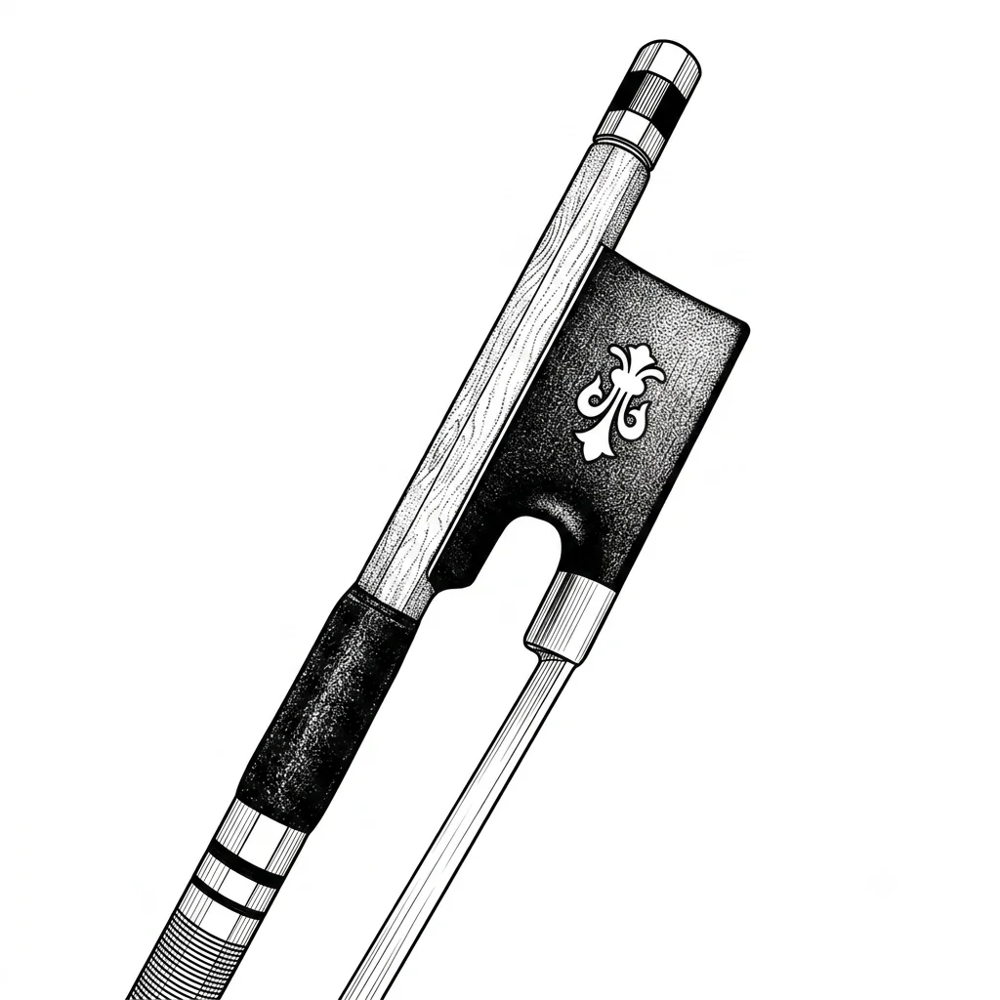
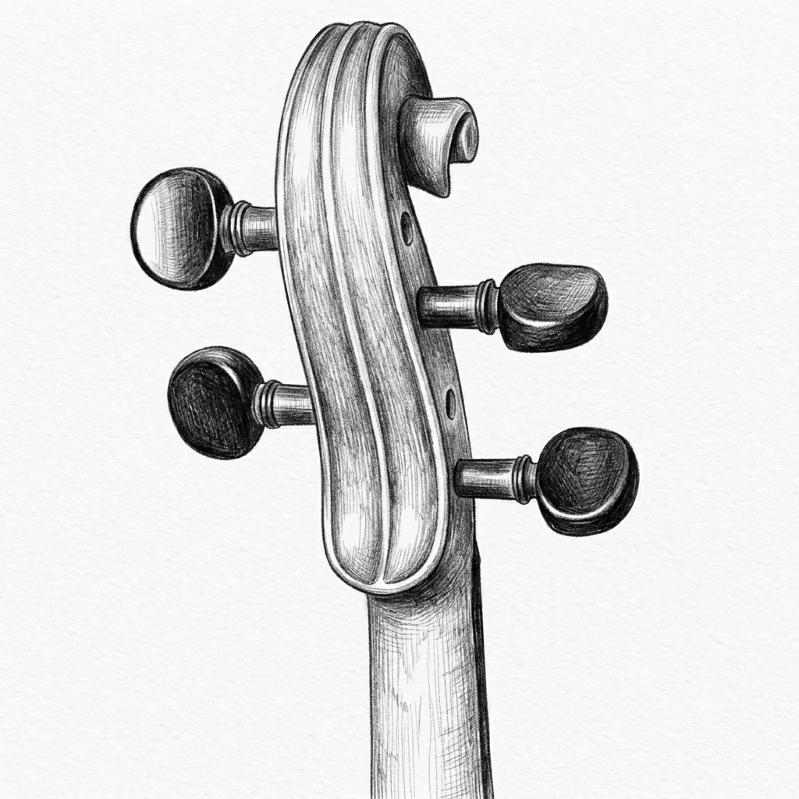
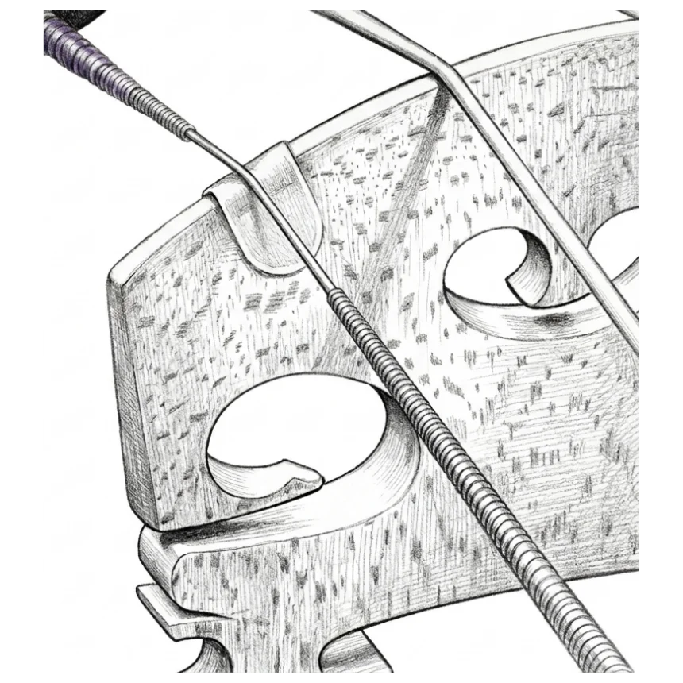
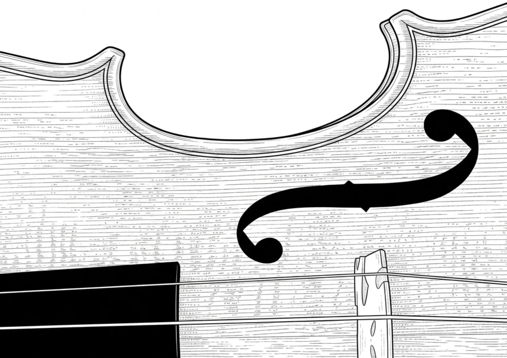
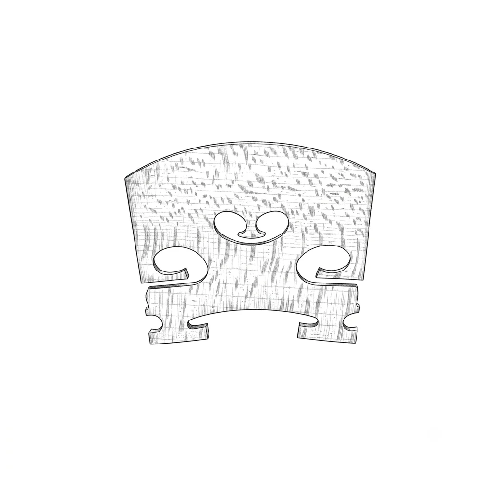

Portal NKL
Seja você iniciante dando os primeiros passos ou profissional ajustando os mínimos detalhes, aqui você encontra respostas claras, sem enrolação e com base real para cuidar do seu som.
Importação Direta na Fonte! MÉTODO NKL
Quer parar de pagar uma fortuna por instrumentos e acessórios aqui no Brasil? Eu montei um passo a passo simples para você aprender a comprar violinos de oficina e peças direto das fábricas internacionais com até 40% de economia e total segurança.
Acessar Método de Importação
Equipamentos Recomendados
Chega de gastar dinheiro testando acessórios no escuro. Aqui eu separei uma lista com os arcos, breus e espalheiras que realmente funcionam e entregam o melhor custo-benefício para o seu dia a dia.
Ver Vitrine de Recomendados
Gráfico de Cordas
Quer entender a diferença entre uma corda e outra sem precisar gastar uma nota testando todas? Neste gráfico visual, você consegue ver o mapa de timbre de várias marcas e entender de forma rápida quais são as mais brilhantes, focadas ou aveludadas.
Explorar Gráfico de Cordas
Diferencie inteiramente suas cordas
Ficou na dúvida entre duas ou mais opções para o seu violino? Escolha os encordoamentos que você está de olho e veja lado a lado todas as diferenças de resposta, durabilidade e peso nos dedos antes de fechar o carrinho.
Comparar Cordas ao Vivo
O Caminho do Som
Você já parou para pensar em como o som realmente nasce? Aqui nós explicamos de um jeito bem simples e prático toda a jornada do áudio: desde o exato momento em que a crina do arco toca a corda, passando pela vibração do cavalete, até o som se espalhar por completo pelo corpo do instrumento.
Desvendar Física Acústica